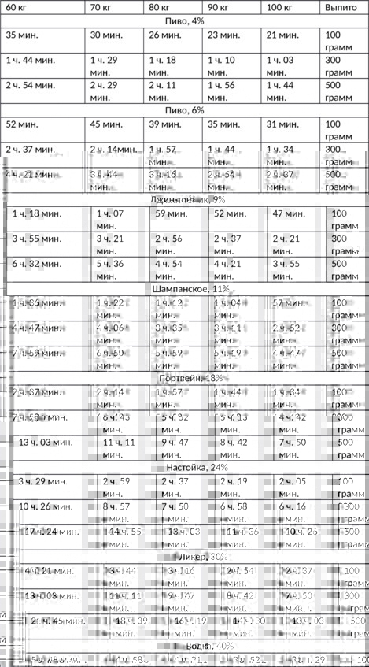
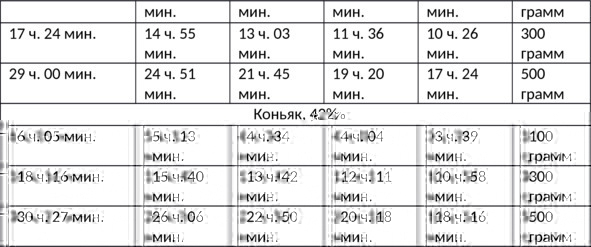

Время выведения алкоголя из организма и степени опьянения

Скорость усвоения алкоголя у каждого человека индивидуальна и зависит от особенностей организма, вида и крепости напитка, закуски, температуры воздуха и других факторов. Спрогнозировать, как быстро наступит опьянение и последующее протрезвление, в каждом конкретном случае практически невозможно.
Степень опьянения определяется процентом алкоголя, содержащимся крови. Теоретически у трезвого человека этот показатель должен быть нулевым. Но на практике из-за погрешности измерительных приборов (алкотестеров), приема некоторых лекарств на спиртовой основе, продуктов и напитков, вызывающих брожение в желудке (шоколадные конфеты, квас, кефир, теплые соки, переспелые бананы, черный хлеб и т. д.) пьяным могут признать даже человека, не пившего спиртное. Чтобы избежать подобных казусов, в законодательстве большинства стран введена ненулевая допустимая норма алкоголя, при которой человек считается трезвым. Это очень актуально для водителей.
По состоянию на 2017 год согласно ст. 12.8 КоАП РФ ответственность за вождение в нетрезвом виде наступает «в случае установленного факта употребления вызывающих алкогольное опьянение веществ, который определяется наличием абсолютного этилового спирта в концентрации, превышающей возможную суммарную погрешность измерений, а именно 0,16 миллиграмма на один литр выдыхаемого воздуха». Это количество примерно соответствует 0,3 промилле (0,3 г алкоголя на 1 л крови).
Среднее время выведения алкоголя из крови в зависимости от веса человека и количества выпитого спиртногоВ таблице указаны усредненные значения, поскольку время выведения алкоголя из организма кроме массы тела зависит от общего состояния здоровья, работы печени и почек, поэтому для больных или пожилых людей цифры нужно увеличивать на 30—80%.
Для получения более точных значений воспользуйтесь онлайн-калькулятором алкоголя на сайте. Сервис работает на основе всемирно признанной формулы Видмарка (Widmark Erik M. P.) и учитывает не только количество выпитого и вес, но также пол, рост человека и наполненность его желудка. Можно одновременно задать сразу несколько напитков, если проверяемый смешивал спиртное.


Легкая (0,5—1,5 промилле) – наступает в первые минуты после употребления алкоголя. Мышцы расслабляются, улучшается настроение, появляется чувство комфорта. Человек становится общительным, смелым, излишне активным.
Средняя (1,5—2,5‰) – речь монотонная, иногда невнятная. Нарушается координация движений. Появляется раздражительность, грубость к окружающим или незнакомцам, агрессия. При средней степени опьянения большинство людей готовы затеять ссору или драку. Случаются кратковременные провалы памяти.
Сильная (2,5—3,0‰) – координация полностью теряется, речь невнятная, часто сопровождающаяся полной потерей памяти. Зачастую при сильном опьянении человек теряет сознание, может наблюдаться непроизвольное мочеиспускание.
Алкогольное отравление (3—5‰) – чревато потерей здоровья или летальным исходом. Концентрация выше 5 промилле считается смертельной дозой алкоголя, при которой спасти потерпевшего можно только в медицинском учреждении.